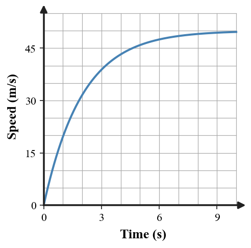

1. State the condition that makes a falling object be in free fall.
2. Ignoring air resistance near Earth, what acceleration magnitude does a freely falling object have?
3. A parachute is open and produces a large upward force. Is the skydiver in free fall or nonfree fall?
4. Define terminal speed using both force balance and motion.
5. A rock and a feather fall in a vacuum. Which has the greater free-fall acceleration?
6. A 70-kg skydiver has weight about 700 N. At one instant air resistance is 250 N upward. Determine the net force and direction.
7. Use the speed–time graph for a falling object in air. Describe how the acceleration changes as the curve approaches a horizontal plateau.

8. A falling object has weight 500 N downward and air resistance 500 N upward. Determine net force and describe its motion if it is already moving downward.
9. Two objects of different mass fall in a vacuum. Explain why each has acceleration $g$ even though gravity exerts different force magnitudes on them.
10. A falling object has weight 300 N and upward air resistance 120 N. Compare its acceleration with $g$ and explain why it is smaller than $g$.
11. A student says, “At terminal speed gravity turns off because acceleration is zero.” Critique the claim using the force balance at terminal speed.
12. A crumpled paper ball and a flat sheet have the same mass and are dropped through air. Predict which reaches the ground first and defend the prediction using air resistance and net force.
13. Free fall means
14. Ignoring air resistance, the free-fall acceleration near Earth is about
15. A falling object has 600 N weight and 200 N air resistance. Net force is
16. At terminal speed, air resistance is
17. At terminal speed, acceleration is
18. A rock and feather fall in a vacuum. Which statement is correct?
19. If air resistance grows while weight stays constant, downward net force
20. Which object generally experiences the most air resistance at the same speed?